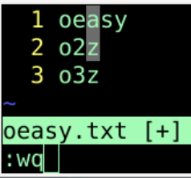
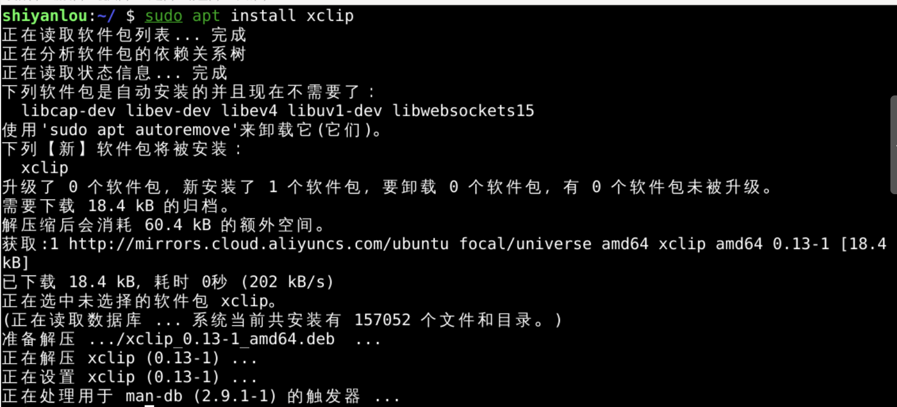
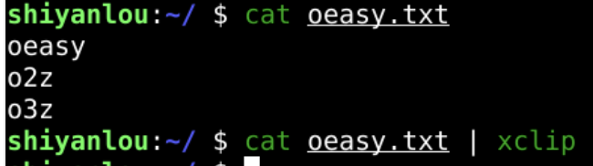
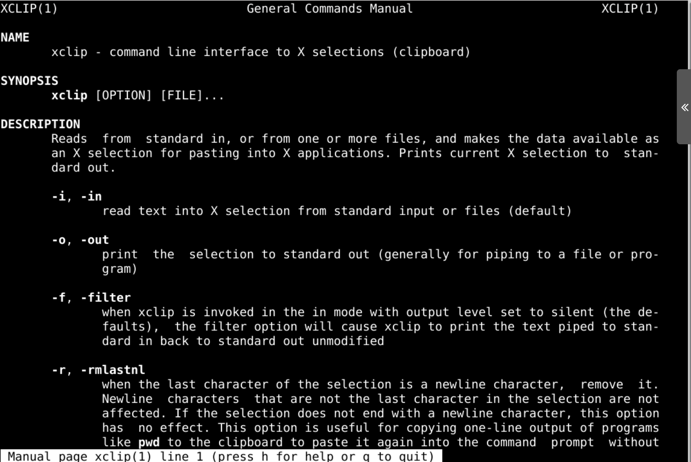
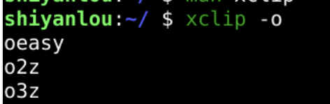
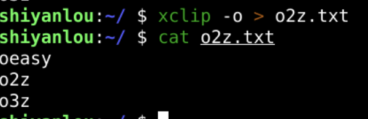
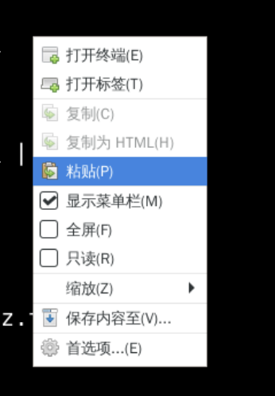
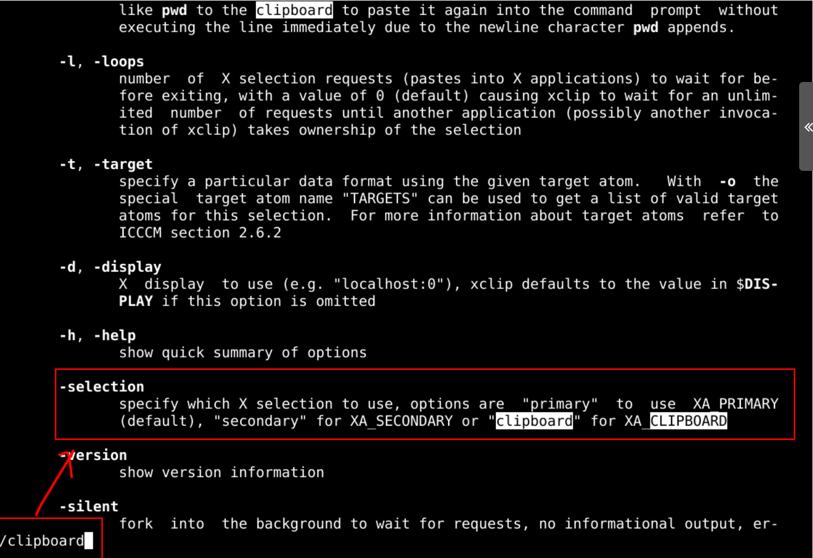
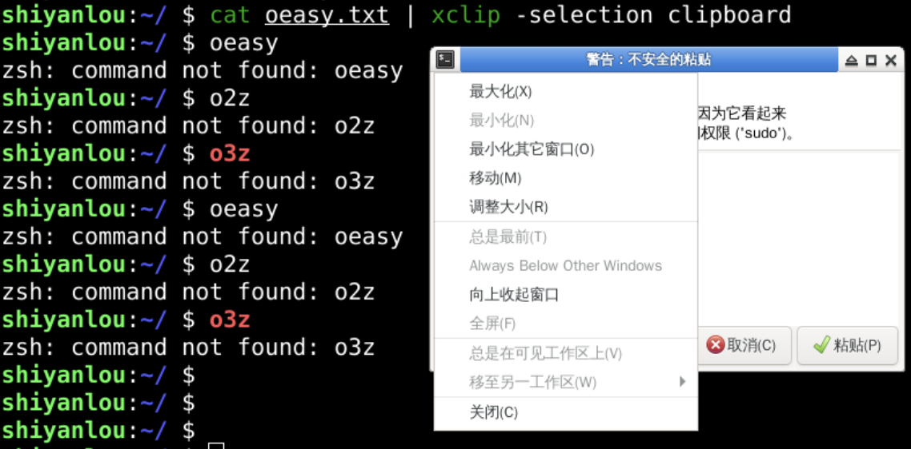
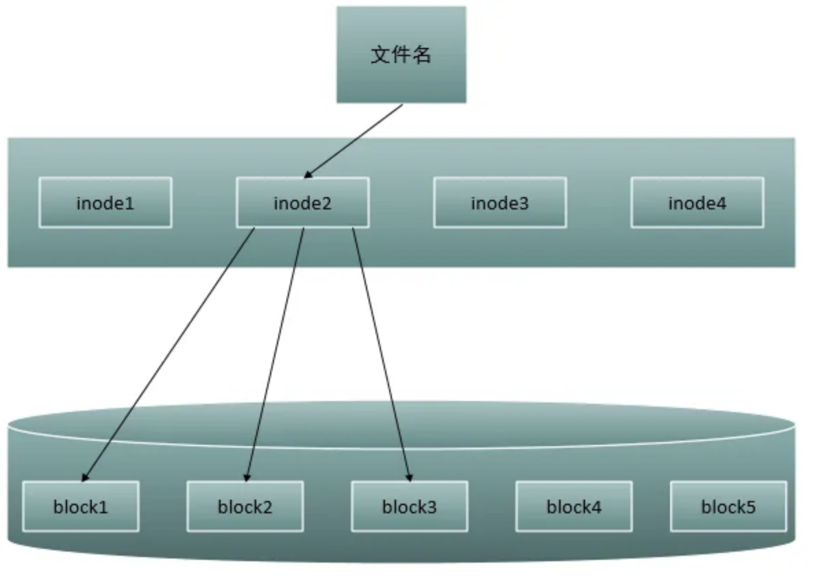

拷贝粘贴文件内容_pbcopy_pbpaste
回忆
- 上次我们研究了ln
- ln指的是链接(link)
- 可以建立硬链接、软链接
- 硬链接
- 直接指向原来文件所在的硬盘位置
- 指向索引节点(inode)
- 索引节点被引用数量+1
- 如果源文件被删除
- 硬链接仍然指向索引节点(inode)
- 软链接
- 指向原来的文件而不是索引节点
- 所以如果源文件被删除
- 软链接指向目标消失
- 也就失效了
- cp -l 拷贝的是一个硬链接
- 如果我只想拷贝文件中的内容
- 有什么好方法吗？
准备环境

安装xclip

使用xclip

- 可是这样就真的输出到哪里了呢？
- man xclip
xclip文档

- 确实xclip将cat oeasy.txt的结果
- 然后需要用-o 进行输出
xclip 输出


尝试输出

搜索帮助

剪贴板
- cat oeasy.txt | xclip -selection clipboard

总结
- 这次研究了xclip
- xclip 可以将文件内容输出到剪贴板
- cat oeasy.txt | xclip -selection clipboard
- 然后再粘贴到合适的地方
- 纯键盘操作还是很方便的
- 文件内容就这样被提取到了内存

- 文件内容之外
- 文件还包括什么呢？
- 这个索引节点究竟长什么样子？🤔
- 背后又是什么原理？🤔
- 下次再说👋